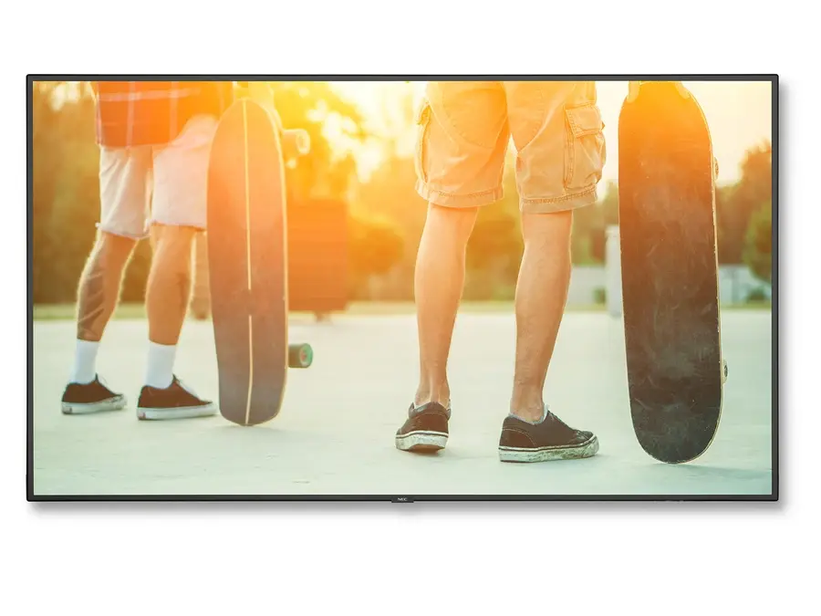

Экономичные дисплеи, серия V
Серия экономичных дисплеев NEC сочетает великолепное качество изображения, необходимое для яркой подачи рекламных материалов, с изящным дизайном и самым низким соотношением цена/производительность. Модельный ряд включает панели с диагональю до 98 дюймов и поддержкой разрешения контента вплоть до 4K, а тонкие рамки помогают создать бесшовное экранное пространство с минимальными вложениями.